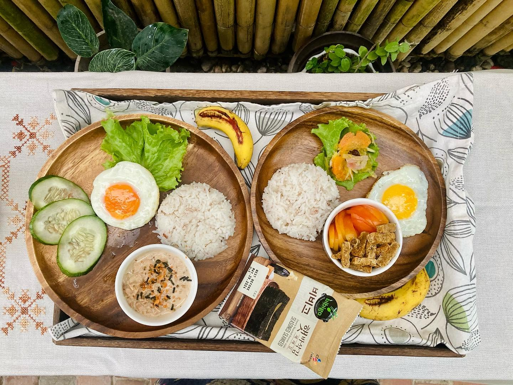

Guest Accommodation
Balai Lawaan provides private guest accommodations for visitors looking for a quiet and home-like stay in Iloilo City.
- Air conditioning
- Private bathroom
- Free WiFi
- Access to common areas
Room prices are available upon inquiry.
A quiet and comfortable homestay in Iloilo City
Balai Lawaan provides comfortable accommodation, shared spaces, refreshments, and assistance for guests staying in Iloilo City.
Balai Lawaan provides private guest accommodations for visitors looking for a quiet and home-like stay in Iloilo City.
Room prices are available upon inquiry.

Guests may request a home-cooked breakfast and enjoy refreshments during their stay.

Guests can use the shared kitchen and dining facilities for convenience during their stay.

Guests have shared areas where they can relax, socialize, spend time outdoors, or enjoy recreational activities.

Balai Lawaan offers transportation-related assistance to help guests travel between the property, transportation hubs, and destinations around Iloilo.
Additional charges may apply.
Balai Lawaan can assist guests in arranging an Islas de Gigantes tour during their stay.
Guests should ask the property for current tour details, inclusions, and any applicable charges.